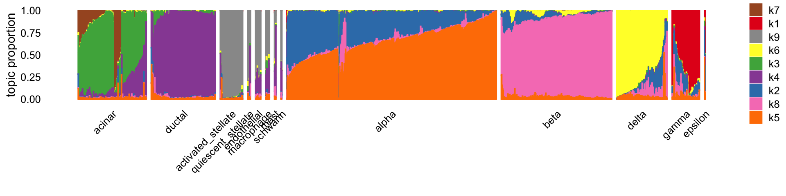
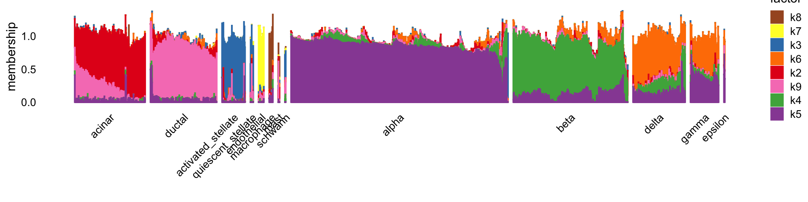
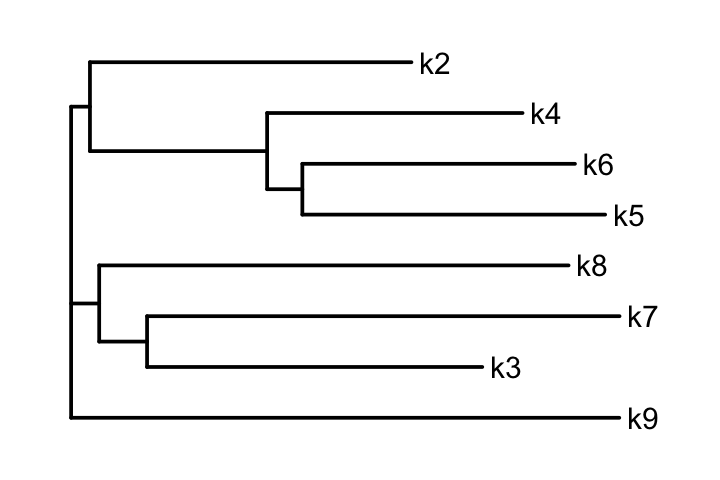
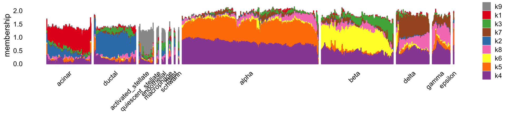
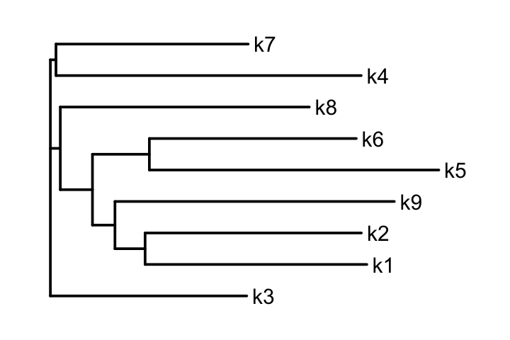
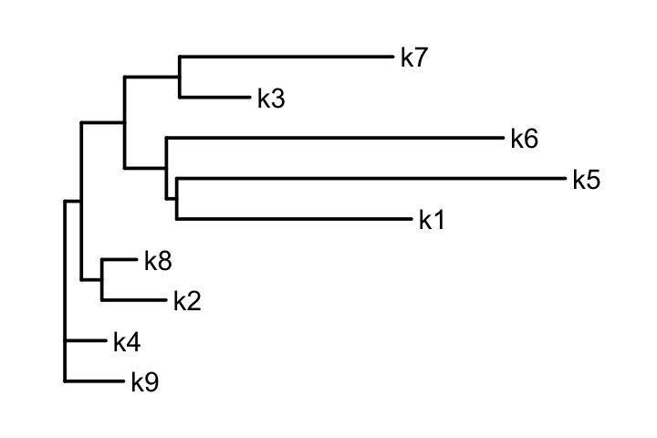
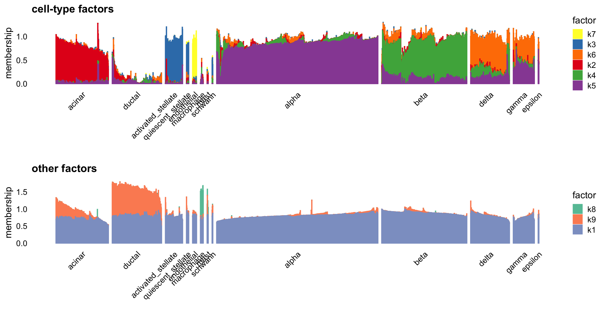
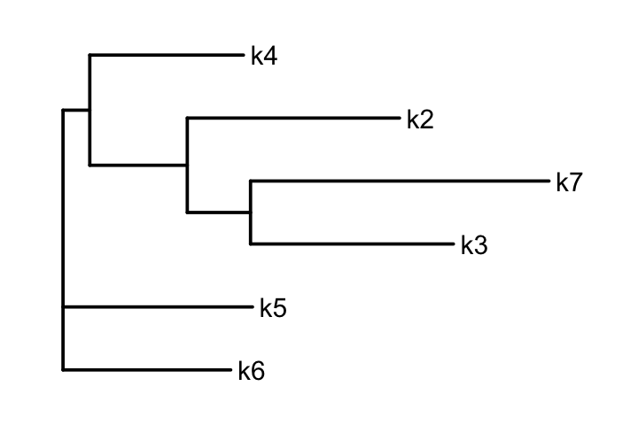
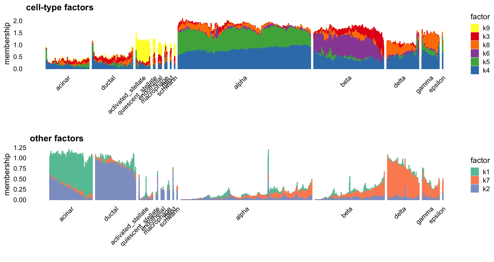
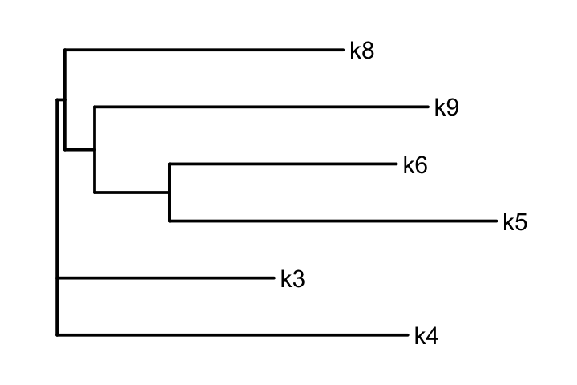

Tree-based representations of the pancreas data
Peter Carbonetto
Last updated: 2024-12-18
Checks: 7 0
Knit directory:
single-cell-jamboree/analysis/
This reproducible R Markdown analysis was created with workflowr (version 1.7.1). The Checks tab describes the reproducibility checks that were applied when the results were created. The Past versions tab lists the development history.
Great! Since the R Markdown file has been committed to the Git repository, you know the exact version of the code that produced these results.
Great job! The global environment was empty. Objects defined in the global environment can affect the analysis in your R Markdown file in unknown ways. For reproduciblity it’s best to always run the code in an empty environment.
The command set.seed(1) was run prior to running the
code in the R Markdown file. Setting a seed ensures that any results
that rely on randomness, e.g. subsampling or permutations, are
reproducible.
Great job! Recording the operating system, R version, and package versions is critical for reproducibility.
Nice! There were no cached chunks for this analysis, so you can be confident that you successfully produced the results during this run.
Great job! Using relative paths to the files within your workflowr project makes it easier to run your code on other machines.
Great! You are using Git for version control. Tracking code development and connecting the code version to the results is critical for reproducibility.
The results in this page were generated with repository version a09b4cf. See the Past versions tab to see a history of the changes made to the R Markdown and HTML files.
Note that you need to be careful to ensure that all relevant files for
the analysis have been committed to Git prior to generating the results
(you can use wflow_publish or
wflow_git_commit). workflowr only checks the R Markdown
file, but you know if there are other scripts or data files that it
depends on. Below is the status of the Git repository when the results
were generated:
Untracked files:
Untracked: data/Immune_ALL_human.h5ad
Unstaged changes:
Modified: analysis/pancreas.Rmd
Modified: analysis/pancreas_another_look.Rmd
Note that any generated files, e.g. HTML, png, CSS, etc., are not included in this status report because it is ok for generated content to have uncommitted changes.
These are the previous versions of the repository in which changes were
made to the R Markdown (analysis/pancreas_trees.Rmd) and
HTML (docs/pancreas_trees.html) files. If you’ve configured
a remote Git repository (see ?wflow_git_remote), click on
the hyperlinks in the table below to view the files as they were in that
past version.
| File | Version | Author | Date | Message |
|---|---|---|---|---|
| Rmd | a09b4cf | Peter Carbonetto | 2024-12-18 | workflowr::wflow_publish("pancreas_trees.Rmd", verbose = TRUE) |
| Rmd | 772d36b | Peter Carbonetto | 2024-12-18 | workflowr::wflow_publish("index.Rmd") |
Here we build on the “another look” analysis and explore tree-based representations of the pancreas data.
First, load the packages needed for this analysis.
library(Matrix)
library(fastTopics)
library(ggplot2)
library(cowplot)
library(ape)Set the seed for reproducibility.
set.seed(1)CEL-Seq2 data
Load the CEL-Seq2 pancreas data and the outputs generated by running
the compute_pancreas_celseq2_factors.R script.
load("../data/pancreas.RData")
load("../output/pancreas_celseq2_factors.RData")
i <- which(sample_info$tech == "celseq2")
sample_info <- sample_info[i,]
counts <- counts[i,]
sample_info <- transform(sample_info,celltype = factor(celltype))Topic model (fastTopics)
Here is the topic model (with 9 topics):
celltype <- sample_info$celltype
celltype <-
factor(celltype,
c("acinar","ductal","activated_stellate","quiescent_stellate",
"endothelial","macrophage","mast","schwann","alpha","beta",
"delta","gamma","epsilon"))
L <- poisson2multinom(pnmf)$L
structure_plot(L,grouping = celltype,gap = 20,perplexity = 70,n = Inf)
Fit a tree to the topics using the neighbor-joining tree algorithm:
par(mar = c(1,1,1,1))
k <- 9
F <- poisson2multinom(pnmf)$F
D <- as.matrix(dist(t(F)))
rownames(D) <- paste0("k",1:k)
colnames(D) <- paste0("k",1:k)
tr <- nj(D)
tr$edge.length <- abs(tr$edge.length)
plot(tr,cex = 0.75,edge.width = 1.5,adj = 5,font = 1)
Flashier NMF
Here is the empirical Bayes NMF fit (with 9 factors):
L <- fl_nmf_ldf$L
k <- ncol(L)
colnames(L) <- paste0("k",1:k)
structure_plot(L[,-1],grouping = celltype,gap = 20,perplexity = 70,n = Inf) +
labs(y = "membership",fill = "factor",color = "factor")
Fit a tree to these factors using the neighbor-joining tree algorithm:
par(mar = c(1,1,1,1))
k <- 9
ks <- 2:9
D <- as.matrix(dist(t(fl_nmf_ldf$F)))
rownames(D) <- paste0("k",1:k)
colnames(D) <- paste0("k",1:k)
tr <- nj(D[ks,ks])
tr$edge.length <- abs(tr$edge.length)
plot(tr,cex = 0.75,edge.width = 1.5,adj = 5,font = 1)
NMF (NNLM)
Let’s now have a look at the “vanilla” NMF (produced by the NNLM package). As before, this NMF has 9 factors.
scale_cols <- function (A, b)
t(t(A) * b)
W <- nmf$W
k <- ncol(W)
d <- apply(W,2,max)
W <- scale_cols(W,1/d)
colnames(W) <- paste0("k",1:k)
structure_plot(W,grouping = celltype,gap = 20,perplexity = 70,n = Inf) +
labs(y = "membership",fill = "factor",color = "factor")
Fit a tree to these factors using the neighbor-joining tree algorithm:
par(mar = c(1,1,1,1))
H <- nmf$H
d <- apply(H,2,max)
H <- scale_cols(H,1/d)
D <- as.matrix(dist(H))
rownames(D) <- paste0("k",1:k)
colnames(D) <- paste0("k",1:k)
tr <- nj(D)
tr$edge.length <- abs(tr$edge.length)
plot(tr,cex = 0.75,edge.width = 1.5,adj = 5,font = 1)
Smart-seq2 data
Load the Smart-Seq2 data and the outputs generated from running the
compute_pancreas_smartseq2_factors.R script.
load("../data/pancreas.RData")
load("../output/pancreas_smartseq2_factors.RData")
i <- which(sample_info$tech == "smartseq2")
sample_info <- sample_info[i,]
counts <- counts[i,]
sample_info <- transform(sample_info,celltype = factor(celltype))
celltype <- sample_info$celltype
celltype <-
factor(celltype,
c("acinar","ductal","activated_stellate","quiescent_stellate",
"endothelial","macrophage","mast","schwann","alpha",
"beta","delta","gamma","epsilon"))Topic model (fastTopics)
Here is the topic model with 9 topics:
L <- poisson2multinom(pnmf)$L
structure_plot(L,grouping = celltype,gap = 20,perplexity = 70,n = Inf)Fit a tree to the topics using the neighbor-joining tree algorithm:
par(mar = c(1,1,1,1))
k <- 9
F <- poisson2multinom(pnmf)$F
D <- as.matrix(dist(t(F)))
rownames(D) <- paste0("k",1:k)
colnames(D) <- paste0("k",1:k)
tr <- nj(D)
tr$edge.length <- abs(tr$edge.length)
plot(tr,cex = 0.75,edge.width = 1.5,adj = 5,font = 1)
Flashier NMF
Here is the empirical Bayes NMF fit (with 9 factors):
L <- fl_nmf_ldf$L
k <- ncol(L)
colnames(L) <- paste0("k",1:k)
celltype_factors <- 2:7
other_factors <- c(1,8,9)
p1 <- structure_plot(L[,celltype_factors],grouping = celltype,gap = 20,
perplexity = 70,n = Inf) +
labs(y = "membership",fill = "factor",color = "factor",
title = "cell-type factors")
other_colors <- c("#66c2a5","#fc8d62","#8da0cb")
p2 <- structure_plot(L[,other_factors],grouping = celltype,gap = 20,
perplexity = 70,n = Inf) +
labs(y = "membership",fill = "factor",color = "factor",
title = "other factors") +
scale_color_manual(values = other_colors) +
scale_fill_manual(values = other_colors)
plot_grid(p1,p2,nrow = 2,ncol = 1)
Fit a tree to the cell-type factors using the neighbor-joining tree algorithm:
par(mar = c(1,1,1,1))
k <- 9
D <- as.matrix(dist(t(fl_nmf_ldf$F)))
rownames(D) <- paste0("k",1:k)
colnames(D) <- paste0("k",1:k)
tr <- nj(D[celltype_factors,celltype_factors])
tr$edge.length <- abs(tr$edge.length)
plot(tr,cex = 0.75,edge.width = 1.5,adj = 5,font = 1)
NMF (NNLM)
This is the NMF decomposition (with 9 factors):
scale_cols <- function (A, b)
t(t(A) * b)
W <- nmf$W
k <- ncol(W)
d <- apply(W,2,max)
W <- scale_cols(W,1/d)
colnames(W) <- paste0("k",1:k)
celltype_factors <- c(3:6,8,9)
other_factors <- c(1,2,7)
p1 <- structure_plot(W[,celltype_factors],grouping = celltype,
gap = 20,perplexity = 70,n = Inf) +
labs(y = "membership",fill = "factor",color = "factor",
title = "cell-type factors")
p2 <- structure_plot(W[,other_factors],grouping = celltype,
gap = 20,perplexity = 70,n = Inf) +
scale_color_manual(values = other_colors) +
scale_fill_manual(values = other_colors) +
labs(y = "membership",fill = "factor",color = "factor",
title = "other factors")
plot_grid(p1,p2,nrow = 2,ncol = 1)
Fit a tree to the cell-type factors using the neighbor-joining tree algorithm:
par(mar = c(1,1,1,1))
H <- nmf$H
d <- apply(H,2,max)
H <- scale_cols(H,1/d)
D <- as.matrix(dist(H))
rownames(D) <- paste0("k",1:k)
colnames(D) <- paste0("k",1:k)
tr <- nj(D[celltype_factors,celltype_factors])
tr$edge.length <- abs(tr$edge.length)
plot(tr,cex = 0.75,edge.width = 1.5,adj = 5,font = 1)
sessionInfo()
# R version 4.3.3 (2024-02-29)
# Platform: aarch64-apple-darwin20 (64-bit)
# Running under: macOS Sonoma 14.7.1
#
# Matrix products: default
# BLAS: /Library/Frameworks/R.framework/Versions/4.3-arm64/Resources/lib/libRblas.0.dylib
# LAPACK: /Library/Frameworks/R.framework/Versions/4.3-arm64/Resources/lib/libRlapack.dylib; LAPACK version 3.11.0
#
# locale:
# [1] en_US.UTF-8/en_US.UTF-8/en_US.UTF-8/C/en_US.UTF-8/en_US.UTF-8
#
# time zone: America/Chicago
# tzcode source: internal
#
# attached base packages:
# [1] stats graphics grDevices utils datasets methods base
#
# other attached packages:
# [1] ape_5.8-1 cowplot_1.1.3 ggplot2_3.5.0 fastTopics_0.6-193
# [5] Matrix_1.6-5
#
# loaded via a namespace (and not attached):
# [1] gtable_0.3.4 xfun_0.42 bslib_0.6.1
# [4] htmlwidgets_1.6.4 ggrepel_0.9.5 lattice_0.22-5
# [7] quadprog_1.5-8 vctrs_0.6.5 tools_4.3.3
# [10] generics_0.1.3 parallel_4.3.3 tibble_3.2.1
# [13] fansi_1.0.6 highr_0.10 pkgconfig_2.0.3
# [16] data.table_1.15.2 SQUAREM_2021.1 RcppParallel_5.1.7
# [19] lifecycle_1.0.4 truncnorm_1.0-9 farver_2.1.1
# [22] compiler_4.3.3 stringr_1.5.1 git2r_0.33.0
# [25] progress_1.2.3 munsell_0.5.0 RhpcBLASctl_0.23-42
# [28] httpuv_1.6.14 htmltools_0.5.7 sass_0.4.8
# [31] yaml_2.3.8 lazyeval_0.2.2 plotly_4.10.4
# [34] crayon_1.5.2 later_1.3.2 pillar_1.9.0
# [37] jquerylib_0.1.4 whisker_0.4.1 tidyr_1.3.1
# [40] uwot_0.2.2.9000 cachem_1.0.8 nlme_3.1-164
# [43] gtools_3.9.5 tidyselect_1.2.1 digest_0.6.34
# [46] Rtsne_0.17 stringi_1.8.3 dplyr_1.1.4
# [49] purrr_1.0.2 ashr_2.2-66 labeling_0.4.3
# [52] rprojroot_2.0.4 fastmap_1.1.1 grid_4.3.3
# [55] colorspace_2.1-0 cli_3.6.2 invgamma_1.1
# [58] magrittr_2.0.3 utf8_1.2.4 withr_3.0.0
# [61] prettyunits_1.2.0 scales_1.3.0 promises_1.2.1
# [64] rmarkdown_2.26 httr_1.4.7 workflowr_1.7.1
# [67] hms_1.1.3 pbapply_1.7-2 evaluate_0.23
# [70] knitr_1.45 viridisLite_0.4.2 irlba_2.3.5.1
# [73] rlang_1.1.3 Rcpp_1.0.12 mixsqp_0.3-54
# [76] glue_1.7.0 jsonlite_1.8.8 R6_2.5.1
# [79] fs_1.6.3